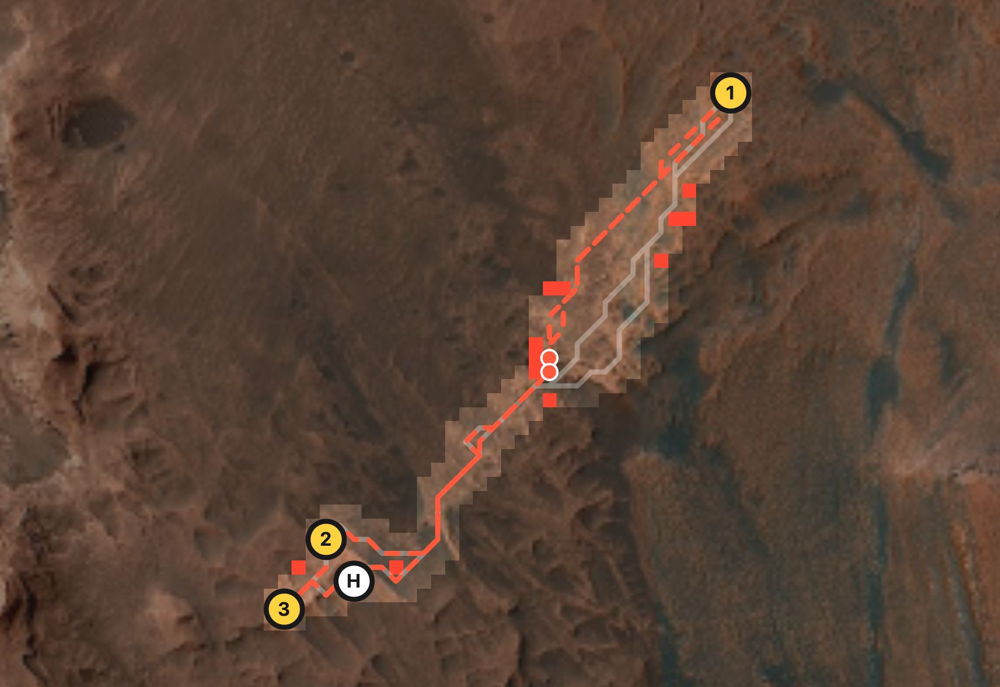
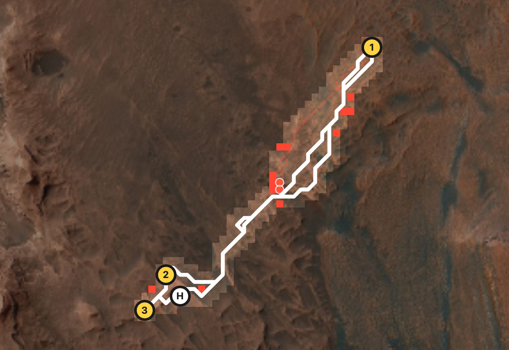
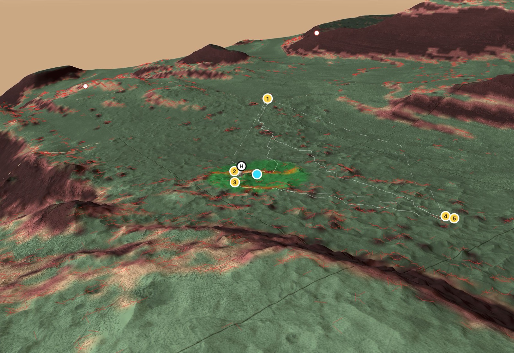
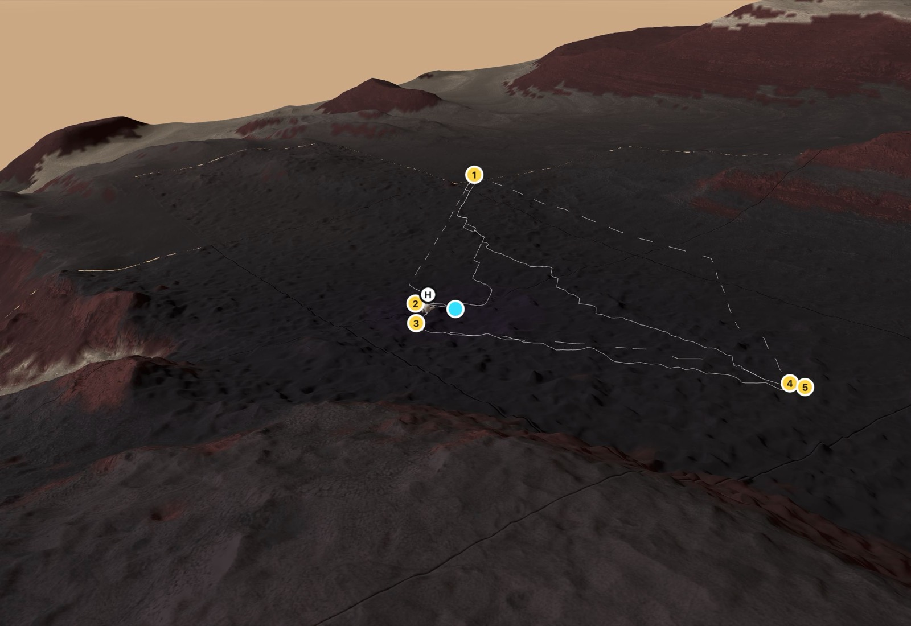

MISSION: VESTA
We’re building tools to plan science walks on Mars.
Explore the mission Watch the mission demoWhy
There is no map of Mars detailed enough for a single walk.
~1.5 m
The smallest rock orbit reliably sees. The ones that trip a walker are smaller.
4–22 min
For a message to reach Earth. Mission control can’t guide each step.
~8 h
Of oxygen in a spacesuit. Every step out has to leave enough to walk back.
So we build that map: start from NASA’s orbit data, scout the route from the air, then walk with the way home always in view.
Vesta Scout
Look before you walk.
Pick science stops from the habitat. A simulated scout helicopter, like NASA’s Ingenuity, flies the route first and finds the rocks orbit can’t see. Then the walk is planned around them.
Planned from orbit: 908 m, 435 kJ. It crosses 2 rock cells the scout later found.
Planned after scouting: 931 m, 442 kJ, no rock crossed. 23 m and 7 kJ more, 35% of the walking budget.


Read the method
- Route
- Least-energy path over 8 m cells of the HiRISE terrain. Each step costs energy from the Pandolf walking equation, scaled to Mars gravity (0.68, an estimate). Slopes over 20° are walls.
- Scout
- The flight is simulated. The rocks it “finds” come from the stored rock layer: a roughness estimate from the terrain, plus rocks the ROSCO detector proposed on a HiRISE image and a person confirmed (23 of 25). Coverage is not complete, so we claim no hit rate.
- Walking back
- Before the walk, the energy to get home is worked out for every cell. On the walk the phone only looks it up, and warns at the point of no return.
Vesta Vision Early version
Read the ground.
The site as a 3D map: NASA’s 1 m terrain with HiRISE colour, and the layers behind every route.
What orbit sees: HiRISE colour at 25 cm, draped on the HiRISE stereo terrain.
Green is walkable, amber is near the 20° limit, red is too steep. Red lines: steps too high to climb in the 1 m terrain. White pins: rocks a person confirmed.
The energy it takes to walk back to the habitat from every cell. Dark is cheap, pale costs more.



Read the method
- Terrain
- USGS’s 1 m Gale terrain model from HiRISE stereo, averaged to 8 m cells for planning. Slope and steps come from it.
- Ground at each stop
- A ground classifier (MobileNetV3-small, trained on NASA/JPL AI4Mars labels) runs in the browser. 93% on 159 held-out Curiosity patches, but 48% on 197 Perseverance patches: it does not transfer to a new rover yet.
- Energy home
- Dijkstra’s shortest path, run once from the habitat over the Pandolf step cost. Red cells have no way back.